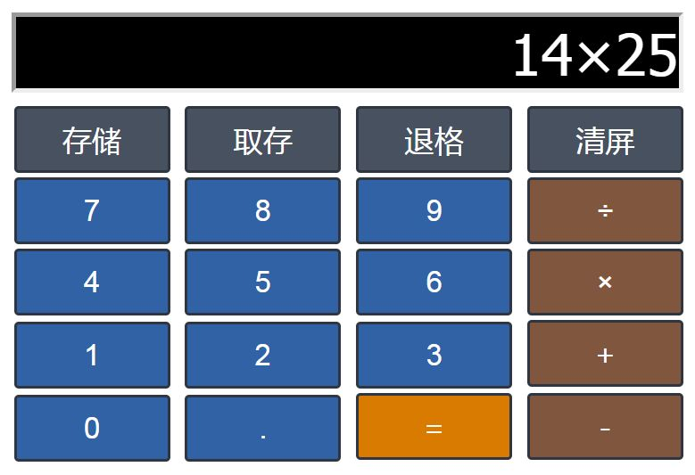

- 完成计算器CSS布局
- 实现点击按钮添加数字进入input
- 点击退格删除数字最后一个，直至删除干净
- 数字第一位不能是0
- 点击"清屏"，清除整个input
- 小数点之后，不能再有小数点
- 实现简单的加减乘除计算,例如10*2、48/5、12+8等，此时按下"="等号，计算出结果
- 附加题1(***)：实现"存储"结果，"取存"结果，再次进行计算的功能
- 附加题2(***)：实现正常的四则运算法则，例如10-2*6+3,正常的运算法则是10-(2*6)+3，要求全部输入完毕之后，按下"="等号，计算出结果